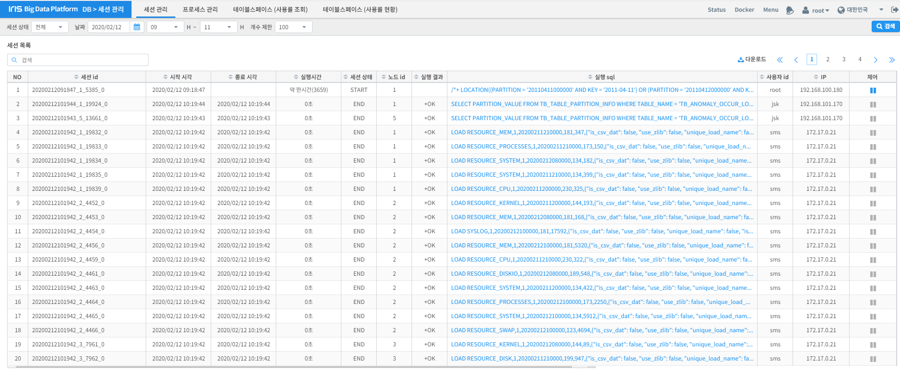
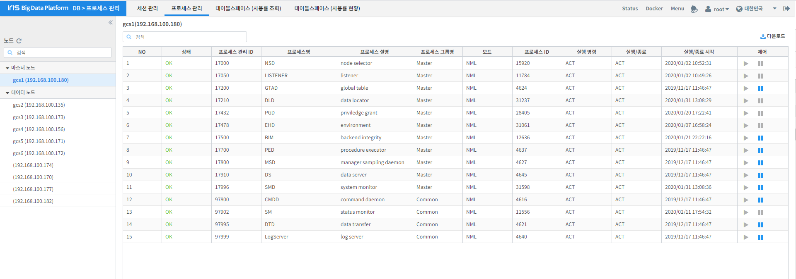
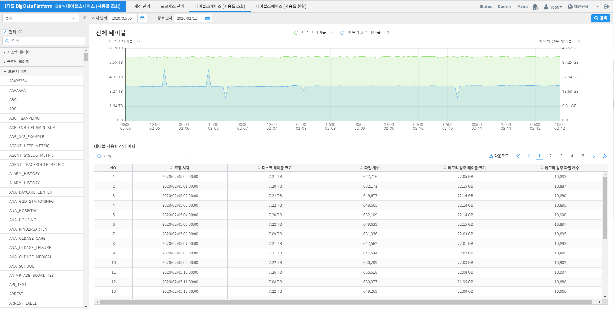
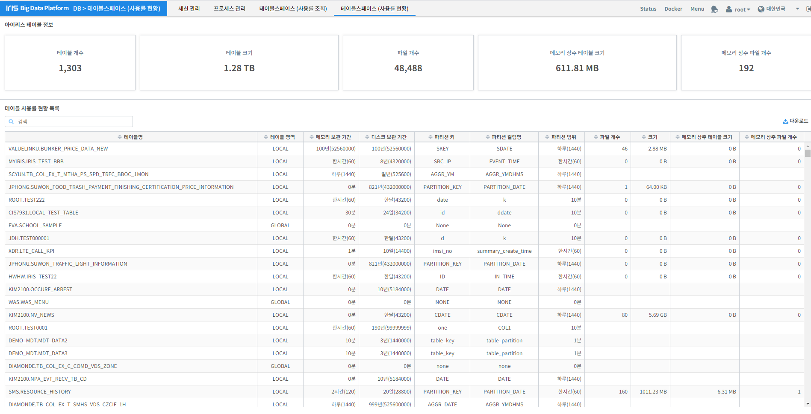

DB¶
세션 관리¶
IRIS의 세션의 정보를 조회할 수 있으며 사용자가 세션을 중지 시킬 수 있는 기능을 제공합니다.
| 번호 | 구분 | 설명 |
| 1 | 세션 상태 설정 | 세션 상태는 전체, 실행, 종료, 비정상 4가지 중 한 개를 선택할 수 있습니다. |
| 2 | 날짜 설정 | 날짜 범위는 하루 기준으로 시간만 변경할 수 있습니다. |
| 3 | 개수 제한 설정 | 세션은 데이터가 많으므로 개수 제한을 권장합니다. 권장하지는 않지만 무제한 기능을 사용 할 수 있고 데이터가 가지고 오는데 느릴 수도 있습니다. |
| 4 | 검색 | 위에 4개의 설정을 하고 검색 버튼을 클릭하면 세션 데이터를 가져옵니다. |
| 5 | 세션 목록 | 세션에 대한 정보를 테이블로 보여줍니다. |
| 6 | 필터 | 테이블 목록을 텍스트 입력으로 필터링 합니다. |
| 7 | 다운로드 | 검색한 내용을 다운로드 합니다. |
| 8 | 제어 | 현재 실행 중인 세션이 있다면 버튼이 파랑색으로 활성화 되며, 버튼을 클릭하면 세션을 종료 합니다. |
프로세스 관리¶
IRIS 노드 별 프로세스 목록을 확인할 수 있으며, 실행 및 중지를 할 수 있는 기능을 제공합니다.
| 번호 | 구분 | 설명 |
| 1 | 노드 목록 | IRIS의 노드 목록을 확인 할 수 있고, 노스 목록에서 특정 노드를 선택하면 해당 노드에 대한 프로세스 정보를 자동으로 검색합니다. |
| 2 | 프로세스 목록 | 노드 별 프로세스 정보를 테이블로 확인할 수 있습니다. |
| 3 | 필터 | 테이블 목록을 텍스트 입력으로 필터링 합니다. |
| 4 | 다운로드 | 검색한 내용을 다운로드 합니다. |
| 5 | 제어 | NSD, LISTENER, DLD 제외한 나머지 프로세스들은 실행 및 중지가 가능 합니다. |
테이블 스페이스 (사용률 조회)¶
전체 또는 테이블 리스트에서 선택한 테이블의 용량, 파일 개수, 램 디스크 상주 용량, 램 디스크 상주 파일 개수 등을 시간 단위로 정보를 확인 할 수 있습니다.
| 번호 | 구분 | 설명 |
| 1 | 테이블 목록 | 전체 체크박스를 체크하면 전체 테이블에 대한 사용량 정보를 자동으로 검색합니다. 또한 테이블 리스트에서 특정 테이블을 선택하면 해당 테이블에 대한 사용량 정보를 자동으로 검색합니다. |
| 2 | 날짜 설정 | 시작, 종료 날짜를 선택할 수 있습니다. |
| 3 | 검색 | 기본은 테이블 목록에서 테이블을 선택하면 자동 검색하지만, 날짜를 변경하여 검색 시에 검색 버튼을 사용합니다. |
| 4 | 그래프 | 테이블 사용량에 대한 정보를 시간단위로 그래프로 나타냅니다. |
| 5 | 테이블 사용량 목록 | 테이블 사용량 정보를 테이블로 확인할 수 있습니다. |
| 6 | 필터 | 테이블 목록을 텍스트 입력으로 필터링 합니다. |
| 7 | 다운로드 | 검색한 내용을 다운로드 합니다. |
테이블 스페이스 (사용률 현황)¶
IRIS의 사용하는 모든 테이블의 사용 현황 및 간략한 테이블 정보를 확인 할 수 있는 기능을 제공합니다.
| 번호 | 구분 | 설명 |
| 1 | IRIS 테이블 정보 | 전체 테이블에 대한 디스크 및 램 디스크 사용량, 파일 개수를 확인할 수 있습니다. |
| 2 | 테이블 사용량 목록 | 테이블 사용량 정보를 테이블로 확인할 수 있습니다. |
| 3 | 필터 | 테이블 목록을 텍스트 입력으로 필터링 합니다. |
| 4 | 다운로드 | 검색한 내용을 다운로드 합니다. |